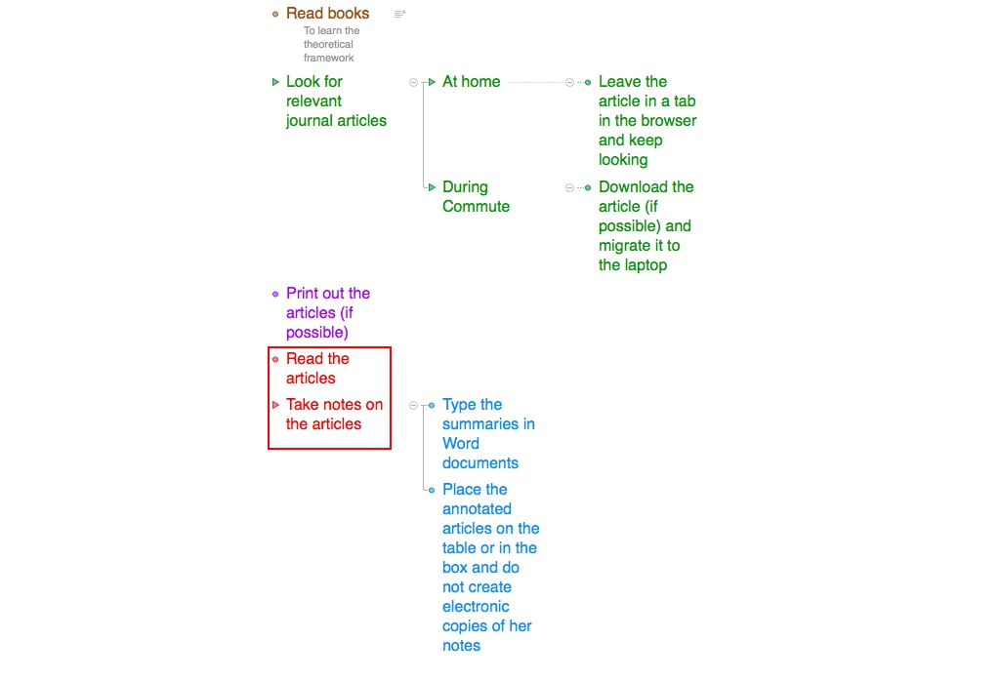

I shadowed C's reading activities on a weekday afternoon in November, 2015. Participant observation was carried out for about two and a half hours.
Background
During the initial interview, C explained to me that her research process contained four or five stages. The stage I had the opportunity to observe was the reading/note-taking stage, highlighted in red in the following diagram.

Since she had printed out the journal articles she wanted to read before my shadowing, I observed her reading process of several journal articles. She did not mention using any device while reading journal articles in print, so I did not expect to witness much of her technology use.
Findings
My observations are summarized as follows.
- Bodily engagement with journal papers
- She highlighted the passages of importance with yellow or orange markers.
- She paraphrased some of the authors' ideas in the margins of the papers with a blue pen.
- She wrote down her own thoughts in the margins with a pencil.
- She used different colors of post-it notes sometimes. When I asked her if she had color-coded different ideas with different colors, her answer was negative. She chose the colors randomly, and even if she had meant something when she used a certain color of post-it, she would have forgotten about the original intention when she returned to it.
- The mobile phone
- While never mentioned in the prior interview, she used her mobile phone very often while studying.
- She mostly used the dictionary app to look up unfamiliar words and went back immediately to the reading after reading the results.
Usefulness of the Method
Participant observation was useful in this study. Even though I only observed her in one stage of her reading cycle, I gained insight on her mobile phone use, which was not revealed during the interview. I also witnessed her tactile engagement with the texts at hand.